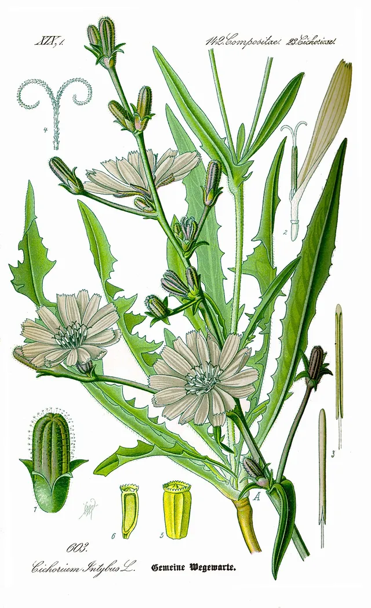

Chicory
Chicory is a root or shoot you can forage from April to December in Ontario, Quebec, British Columbia and Atlantic Canada. Roadside plant with sky-blue flowers on stiff stems; dandelion-like basal leaves.

When is chicory in season in Canada?
Chicory is usually in season April to December. Timing shifts with weather, latitude and altitude.
Where does chicory grow in Canada?
Chicory grows in British Columbia, New Brunswick, Newfoundland and Labrador, Nova Scotia, Ontario, Prince Edward Island, Quebec. Regions: Ontario, Quebec, British Columbia, Atlantic Canada.
How do you recognise chicory?
Roadside plant with sky-blue flowers on stiff stems; dandelion-like basal leaves.
How do you harvest chicory?
Only dig roots where you have the landowner's permission, since uprooting wild plants is illegal in many places. Take a few from a large patch and backfill the hole.
How do you eat chicory?
Young leaves as bitter greens; roasted root as coffee.
How do you store chicory?
Dry roasted root.
What is chicory good for?
Vitamin A.